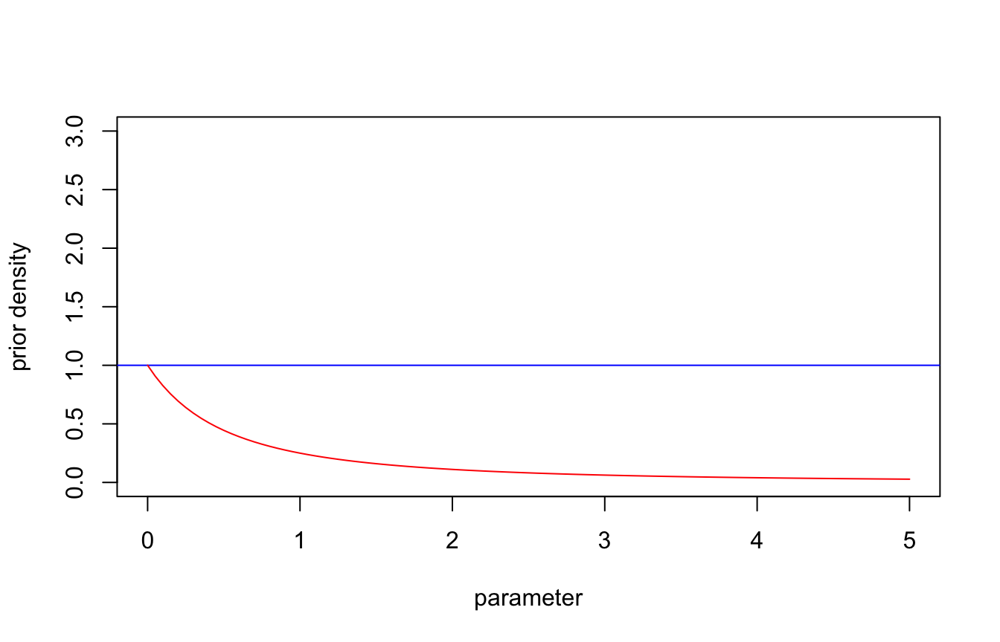
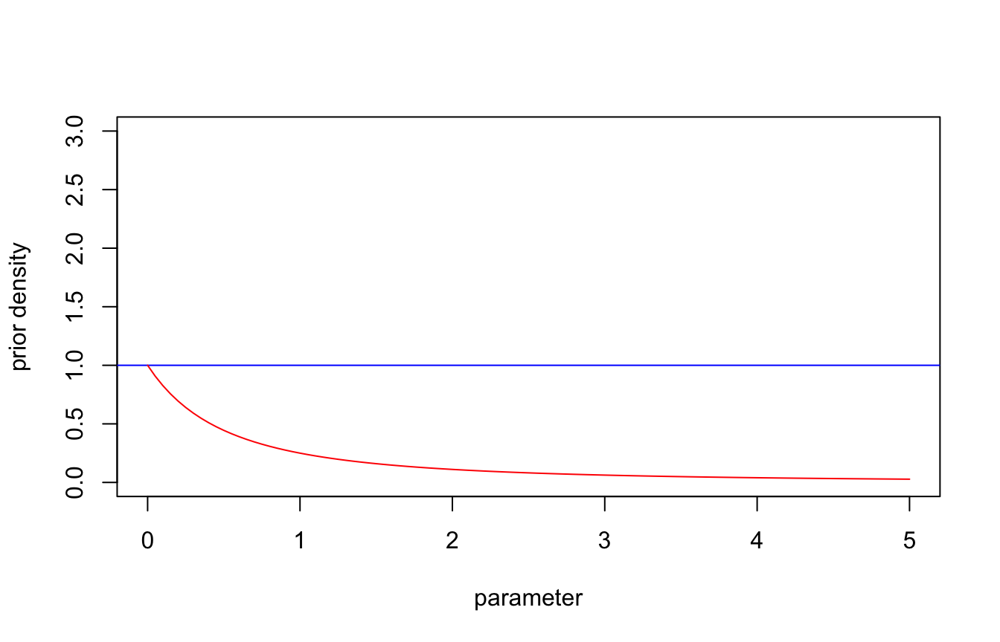

\[ \newcommand{\mc}[1]{\mathcal{#1}} \newcommand{\R}{\mathbb{R}} \newcommand{\E}{\mathbb{E}} \renewcommand{\P}{\mathbb{P}} \newcommand{\var}{{\rm Var}} % Variance \newcommand{\mse}{{\rm MSE}} % MSE \newcommand{\bias}{{\rm Bias}} % MSE \newcommand{\cov}{{\rm Cov}} % Covariance \newcommand{\iid}{\stackrel{\rm iid}{\sim}} \newcommand{\ind}{\stackrel{\rm ind}{\sim}} \renewcommand{\choose}[2]{\binom{#1}{#2}} % Choose \newcommand{\chooses}[2]{{}_{#1}C_{#2}} % Small choose \newcommand{\cd}{\stackrel{d}{\rightarrow}} \newcommand{\cas}{\stackrel{a.s.}{\rightarrow}} \newcommand{\cp}{\stackrel{p}{\rightarrow}} \newcommand{\bin}{{\rm Bin}} \newcommand{\ber}{{\rm Ber}} \DeclareMathOperator*{\argmax}{argmax} \DeclareMathOperator*{\argmin}{argmin} \]
Let \(\pi\) be a discrete distribution. The Shannon Entropy1 of \(\pi\) is \[ \mc{E}(\pi) = -\E_{\pi}[\log \pi(\theta)]. \]
Entropy is a measure of randomness: high entropy = high randomness
Entropy is the expectation of information: \(\mc{E}(\pi) = \E_{\pi}(I(X))\), where \(I(x)\) is the information of the event \(\{X = x\}\).
Roughly speaking, information of an event \(E\) is the knowledge you obtained after the occurrence of \(E\) .
That is, the information \(I(A)\) of an event \(A\) satisfies
Shannon’s solution: \(I(A) = -\log \P(A)\) for \(\P(A) > 0\)
Let \(X\) be a discrete random variable with probability mass function \(\pi(x)\). The Shannon information of \(\pi\) is \[ I(x) \coloneqq I(\{X = x\}) = -\log \P(X = x) = -\log \pi(x). \]
The Shannon entropy of \(\pi\) is \(\mc{E}(\pi) = \E_{\pi}(I(X)) = -\E_{\pi}(\log \pi(X))\).
If the support of \(\pi(x)\) is a finite set, say \(\{x_1,\ldots, x_m\}\), then \(\mc{E}(\pi) \leq \log m\) and the equality holds when \(\pi(x) = \frac{1}{m}\).
What if \(X\) is continuous? If \(\pi(x)\) is a probability density, the information \(-\log \pi(x)\) can be negative.
Cross entropy: \(\mc{E}(\pi, \pi_0) = - \E_{\pi_0}(\log \pi(X))\)
Relative entropy: \[ \mc{E}(\pi_0\| \pi) = - \E_{\pi_0}[I(X;\pi_0)] = \E_{\pi_0}\left[\log \frac{\pi_0(X)}{\pi(X)}\right] = D_{KL}(\pi_0\| \pi) \geq 0 \]
It is also called the Kullback-Liebler divergence.
A common choice of the reference distribution \(\pi_0\) is non-informative distributions, e.g., the Lebesgue measure.
Some take-home messages:
The maximum entropy prior (MEP) (with respect to a reference distribution \(\pi_0\)) is the solution to the optimization problem \[ \max_{\pi \in \Gamma} \; \mc{E}(\pi_0 \| \pi) \qquad s.t. \quad \E_{\pi}\left[g_k(\theta)\right]=\omega_k, \quad k = 1, \ldots, K \tag{1}\] where \(\Gamma\) is a class of candidate priors.
The existence of the solution depends on \(g_k\)’s, \(\Gamma\), and \(\pi_0\).
The prior \(\pi\) maximizing the entropy is, in this information-theoretic sense, minimizing the prior information brought through \(\pi\) about \(\theta\).
\[ \E_{\pi}\left[g_k(\theta)\right]=\omega_k, \quad k = 1, \ldots, K. \]
\[ \pi^*(\theta)=\frac{\exp \left\{\sum_{k=1}^K \lambda_k g_k(\theta)\right\} \pi_0(\theta)}{\int \exp \left\{\sum_{k=1}^K \lambda_k g_k(\eta)\right\} \pi_0(\eta)d\eta}. \]
Definition 1 A class \(\mc{P}\) of prior distributions for \(\theta\) is called conjugate for a sampling model \(p(x \mid \theta)\) if \[\begin{align*} \pi(\theta) \in \mc{P} \Rightarrow \pi(\theta \mid x) \in \mc{P} . \end{align*}\]
Consider the exponential family \(f(x\mid\theta) = h(x)\exp(\theta^Tx - \psi(\theta))\).
Proposition 1 A conjugate family for \(f(x \mid \theta)\) is given by \[\begin{align*} \pi(\theta \mid \mu, \lambda)=K(\mu, \lambda) e^{\theta \cdot \mu-\lambda \psi(\theta)}, \end{align*}\] where \(K(\mu, \lambda)\) is the normalizing constant of the density. The corresponding posterior distribution is \(\pi(\theta \mid \mu+x, \lambda+1)\).
\[ \P_\beta(Y=1\mid X = x)=1-\P_\beta(Y=0 \mid X = x)=\frac{\exp \left(\beta^t x\right)}{1+\exp \left(\beta^t x\right)}. \]
\[ f\left(y_1, \ldots, y_n \mid x_1, \ldots, x_n, \beta\right)=\exp \left(\beta^t \sum_{i=1}^n y_i x_i\right) \prod_{i=1}^n\left(1+e^{\beta^t x_i}\right)^{-1}. \]
Let \(f(x \mid \theta)\) be an exponential family and \(\pi(\theta \mid \lambda, \mu)\) be its conjugate prior.
Consider \(\pi(\theta)=\sum_{i=1}^N w_i \pi\left(\theta \mid \lambda_i, \mu_i\right)\).
Then the posterior is \[ \pi(\theta \mid x)=\sum_{i=1}^N w_i^{\prime}(x) \pi\left(\theta \mid \lambda_i+1, \mu_i+x\right). \] where \(w^{\prime}_i(x)\) depends on \(w_i\)’s and the normalizing constant of \(\pi(\theta\mid\lambda,\mu)\)1.
Mixtures can then be used as a basis to approximate any prior distribution.
If we are ignorant of the ways an event can occur, the event will occur equally likely in any way. 1

\[ I(\theta)=\E_\theta\left[\left(\frac{\partial \log f(X \mid \theta)}{\partial \theta}\right)^2\right] \stackrel{(*)}{=} -\E_\theta\left[\frac{\partial^2 \log f(X \mid \theta)}{\partial \theta^2}\right]. \]
If \(X \sim \bin(n, p)\),
\[ \begin{aligned} f(x \mid p) & =\left(\begin{array}{c} n \\ x \end{array}\right) p^x(1-p)^{n-x}, \\ \frac{\partial^2 \log f(x \mid p)}{\partial p^2} & = - \frac{x}{p^2} - \frac{n-x}{(1-p)^2}, \\ I(p) & =n\left[\frac{1}{p}+\frac{1}{1-p}\right]=\frac{n}{p(1-p)} . \end{aligned} \]
Therefore, the Jeffreys prior for this model is \[ \pi_J(p) \propto[p(1-p)]^{-1 / 2} \] and is thus proper, since it is a \(\text{Beta}(1/2, 1/2)\) distribution.
Beta(1,1) (blue) and Beta(1/2, 1/2) (red)
\[ I_{i j}(\theta)=-\mathbb{E}_\theta\left[\frac{\partial^2}{\partial \theta_i \partial \theta_j} \log f(X \mid \theta)\right] \quad(i, j=1, \ldots, k). \]
The Jeffreys noninformative prior is then defined by \(\pi_J(\theta) \propto \sqrt{\det(I(\theta))}\).
If \(f(x \mid \theta)\) belongs to an exponential family, \(f(x \mid \theta)=h(x) \exp (\theta \cdot x-\psi(\theta))\), the Fisher information matrix is given by \(I(\theta)=\nabla \nabla^t \psi(\theta)\) and \[ \pi_J(\theta) \propto\left(\prod_{i=1}^k \psi_{i i}^{\prime \prime}(\theta)\right)^{1 / 2} \] where \(\psi_{i i}^{\prime \prime}(\theta)=\frac{\partial^2}{\partial \theta_i^2} \psi(\theta)\).
Jeffreys prior has several advantages:
Let \(X \sim f(x \mid \theta)\) and \(\theta=\left(\theta_1, \theta_2\right)\). Suppose \(\theta_1\) is the parameter of interest, and \(\theta_2\) is the nuisance parameter.
Let \(X_1, X_2 \iid N(\mu, \sigma^2)\) where \(\sigma\) is the parameter of interest and \(\mu\) is the unknown nuisance parameter.